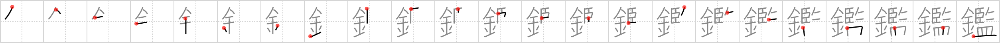

鑑
← →
specimen

Reading:
On-Yomi: カン — Kun-Yomi: かんが.みる、かがみ
Heisig story:
Metal . . . oversee.
Koohii stories:
1) [dingomick] 1-3-2007(173): The overseer tags his slaves with gold earrings, just like specimens.
2) [markjohnquinn] 3-9-2008(98): (Thanks bodhisamaya) The authorities are suspicious about the athlete that won GOLD at the olympics. They are now OVERSEEING a thorough drug test, taking all sorts of SPECIMENS.
3) [Howdoken] 6-7-2008(38): Professor Hojo OVERSEEs his SPECIMENS in their METAL tanks.
4) [Moses] 15-2-2010(37): The overseer tags his favorite slave with gold earrings. "Ah, what a fine specimen!".
5) [scottamus] 9-6-2006(21): The overseer demands a golden shower into the specimen jar.